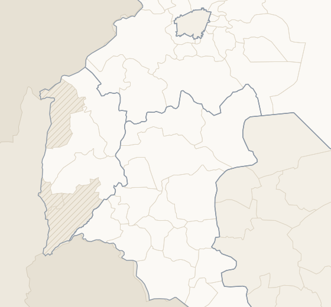

رصد موجز يوميقيد16858
11انتهاكا
الثلاثاء 22 سبتمبر 2026، القنيطرة، درعا
موجز يومي - 22 سبتمبر 2026
ارتكبت قوات الاحتلال الإسرائيلي ما لا يقل عن 11 انتهاكا يوم الثلاثاء الموافق 22 سبتمبر 2026 في محافظتي القنيطرة ودرعا، وفقا لتوثيق مركز سجل.
| النوع | القنيطرة | درعا | المجموع |
|---|---|---|---|
| قصف | 1 | 1 | 2 |
| احتجاز | 1 | 0 | 1 |
| مداهمات | 1 | 0 | 1 |
| إقامة نقطة تفتيش | 0 | 1 | 1 |
| توغل | 2 | 0 | 2 |
| تحليق طيران | 1 | 1 | 2 |
| انتهاكات أخرى | 1 | 1 | 2 |
| المجموع | 7 | 4 | 11 |

كل دائرة بقدر انتهاكات المحافظة في اليوم: القنيطرة 7، درعا 4. التفاصيل على مستوى القرى في الخريطة التفاعلية.
أيام الأسبوع
انتقل بين الموجزات اليومية، الأسبوع الجاري لم يغلق بموجزه الأسبوعي بعد.
للاستشهاد
مركز سجل للدراسات والتوثيق، «موجز يومي - 22 سبتمبر 2026»، رقم القيد 16858، sijil-sy.org/16858